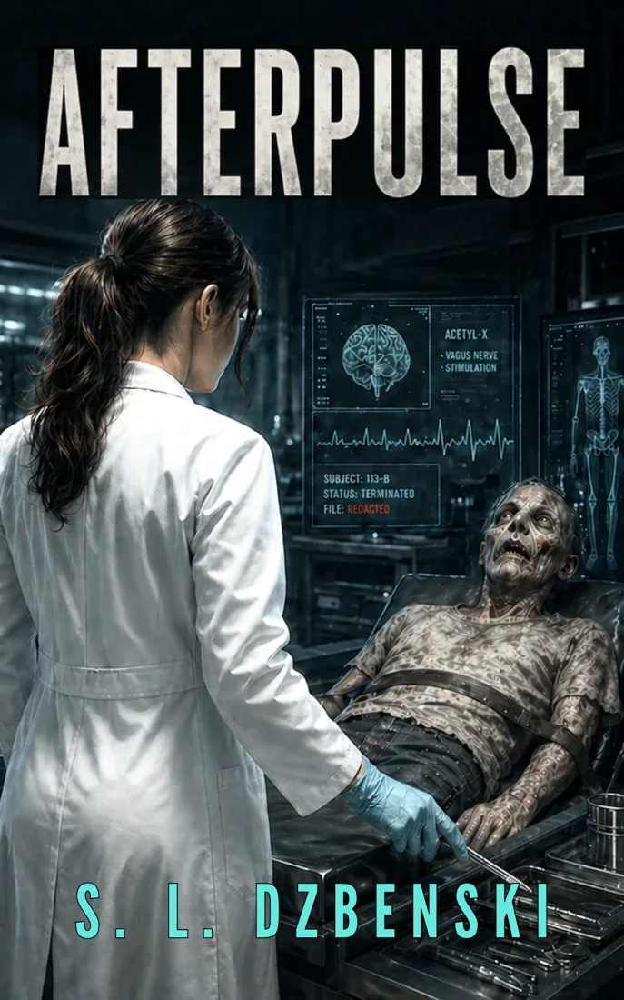
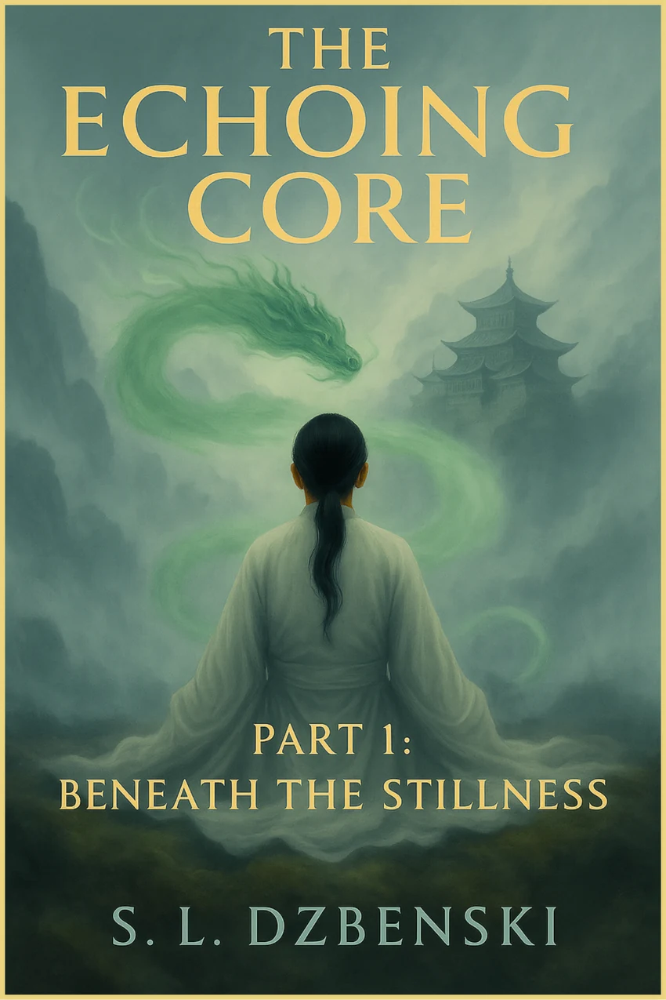
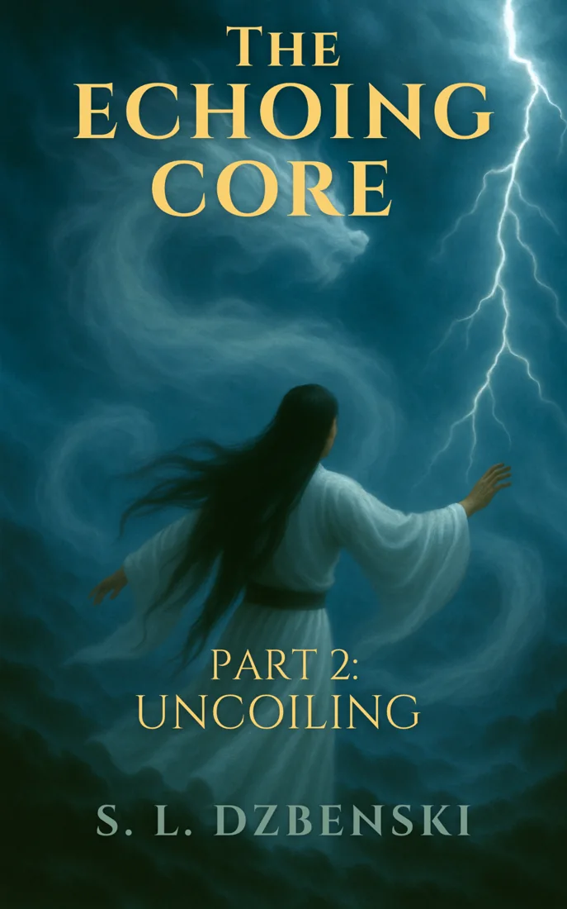
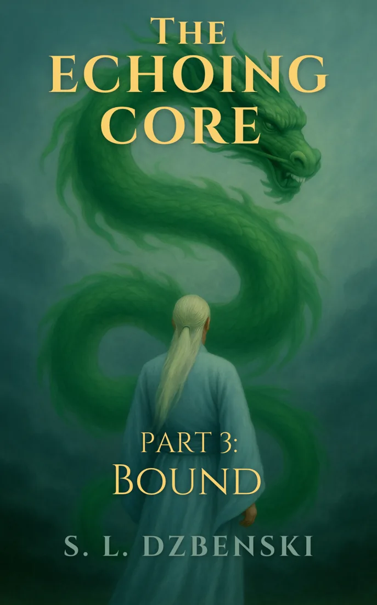

FICTION BY S.L. DZBENSKI
Stories that linger
after the last page.
Science fiction, suspense, and imagined worlds where extraordinary discoveries collide with human choices.

FEATURED NOVEL · AFTERPULSEDISCOVER THE STORIES
Books by S.L. Dzbenski
Explore a standalone science-fiction thriller and the interconnected world of the Echoing Core saga.
STANDALONE THRILLER
Afterpulse
A dark science-fiction thriller exploring the boundaries of science, consciousness, and what it means to be human.
Find Afterpulse on AmazonAN INTERCONNECTED WORLD
The Echoing Core Saga
Enter a world shaped by breath, chi, and disciplined silence. From the mountain halls of Ching-Na to the wandering paths of West Gate, The Echoing Core Saga explores hidden histories, quiet awakenings, and the choices that shape identity and destiny.
Beginning with The Discipline of Silence and continuing through The Echoing Core Trilogy, the saga reveals a world where transformation is not a deviation—it is an inheritance.

Beneath the Stillness
Find on Amazon
Uncoiling
Find on Amazon
Bound
Find on AmazonBEHIND THE BOOKS
About the Author
I’m an educator, librarian, and lifelong maker who believes that learning and creativity are strongest when curiosity leads the way. My work in educational technology and library innovation has taken me from community colleges to makerspaces, where I’ve helped students and educators explore how imagination and research intersect.
I earned my Doctor of Education in Educational Technology from Boise State University, where my research focused on assessing learning in makerspaces. Over the years, I’ve developed STEAM programs, designed curriculum for learners of all ages, and guided library initiatives that bring digital tools and creative exploration together.
When I’m not teaching or building, I’m writing. My fiction explores transformation, identity, and endurance, connecting human experience across silence, discipline, and change. Influenced by the works of Anne McCaffrey, Mercedes Lackey, and Laurell K. Hamilton, I write stories that blend the spiritual and the visceral, set in worlds shaped by choice, consequence, and the echo of what endures.
GET IN TOUCH
Connect with S.L. Dzbenski
Questions, reader feedback, and messages are welcome.
Author contact email: author.sldzbenski@gmail.com
Find all available titles on my Amazon Author Page or connect with me on Goodreads.